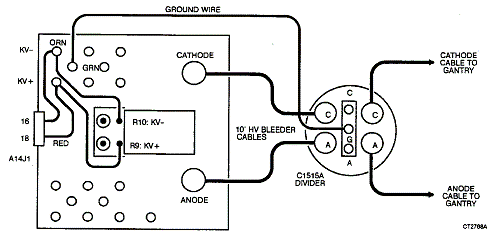
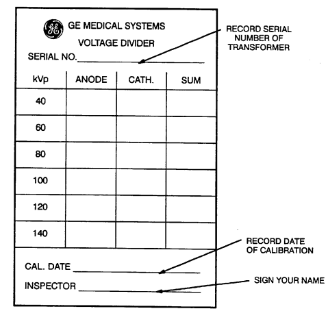

Operating Documentation
Direction 5112972-800, Rev# 2
CT Planned Maintenance Procedures
Operating Documentation |
| Required Persons | Preliminary Reqs | Procedure | Finalization |
|---|---|---|---|
| 1 | Timing Not Applicable | 30 mins | Timing Not Applicable |
Procedure Effectivity:
| Assembly: | GENERATOR |
| Subassembly: | Transformer |
| Purpose: | Calibrate 80 kW Internal Bleeder |
| Last Revised: | July 1995 |
| Item | Qty | Effectivity | Part# | Manufacturer | |
|---|---|---|---|---|---|
| HV Bleeder | 1 | - | - | - | |
| DVM | 1 | - | - | - | |
| Standard FE Toolkit | 1 | - | - | - | |
| Item | Qty | Effectivity | Part# | Manufacturer |
|---|---|---|---|---|
| Calibration Sticker | 1 | - | 46-188162P1 | - |
Calibration of internal bleeder for 80 kW transformer only. Part #46-266668G1. See Illustration 1.
Illustration 1: HV Internal Bleeder Calibration Setup For 80 KW Transformer

Disconnect input from the HV transformer internal bleeder to CT system:
Lift and temporarily tape the RED lead from A14J1-18 at terminal “KV+" of the transformer.
Lift and temporarily tape the ORN lead from A14J1-16 at terminal “KV-" of the transformer.
Connect a DVM set on 20 VDC between anode (A) signal terminal of the external bleeder (C1515A) and the “KV+" terminal of the transformer. Connect the negative DVM lead to the bleeder and the positive lead to the transformer.
Use manual mode of GCAUTO to make exposure at 4 sec. for each of the following techniques:
80 kV/200 mA
120 kV/100 mA
140 kV/170 mA
Read and record the DVM reading during the last two seconds of the exposures on the data sheet.
| NOTE: | Be sure to record the reading during the actual x-ray exposure. The DVM will indicate an erroneous voltage when the safety contractor is closed before the exposure and another erroneous reading after the exposure, when the HV system is discharging. The reading to record is the one while the RED PRI CTR LED on the XG2A4A4 test board is lit. If necessary, reduce the DVM voltage range and repeat the exposure for an accurate reading. If the DVM reading is 0.0 +/- 0.1 volt, no adjustment is required. |
Based on data from the 120 kV: 100 mA exposure, if adjustment is required, loosen the shaft lock on R10 (+) kV CAL, turn the pot shaft the appropriate direction and amount as given in the NOTE below, relock the shaft, and repeat the 120 kv exposure until the DVM reading is 0.0 +/- 0.1 volt.
| NOTE: | Turn the shaft of R10 CW to increase the DVM reading (more positive), and CCW to decrease the DVM reading (more negative). One turn of the pot shaft will change DVM reading about 3.0 volts. |
Reconnect the DVM set on 20VDC between cathode signal terminal of the external bleeder (C1515A) and the kV- terminal of the transformer. Connect the positive DVM lead to the external bleeder and the negative lead to the transformer.
Use manual mode of GCAUTO to make exposure at 4 sec. for the following technics:
80 kV/200 mA
120 kV/100 mA
140 kV/170 mA
Read and record the DVM reading during the last two seconds of the exposures on the data sheet.
| NOTE: | Be sure to record the reading during the actual x-ray exposure. The DVM will indicate an erroneous voltage when the safety contractor is closed before the exposure and another erroneous reading after the exposure, when the HV system is discharging. The reading to record in the one while the RED PRI CTR LED on the XG2A4A4 test board is lit. If necessary, reduce the DVM voltage range and repeat the exposure for an accurate reading. If the DVM reading is 0.0 +/- 0.1 volt, no adjustment is required. |
Based on data from the 120 kV/100 mA exposure, if adjustment is required, loosen the shaft lock on R9 (-) kV CAL, turn the pot shaft the appropriate direction and amount as given below, relock the shaft, and repeat the 120 kV exposure until the DVM reading is 0.0 +/- 0.1 volt. Turn the shaft of R10 CW to increase the DVM reading (more positive), and CCW to decrease the DVM reading (more negative). One turn of the pot shaft will change DVM reading about 3.0 volts.
Exit GCAUTO. Turn off XG1. Reconnect the RED and ORN leads at kV+ and kV-. Turn XG1 power ON.
The internal HV divider should be calibrated twice a year (i.e., every 6 months). After each calibration, affix a 46-188162P1 calibration sticker ( Illustration 2) to the top cover of the transformer. The sticker can be ordered from PRO. Fill out the sticker as shown below.
Illustration 2: 46-188162P1 Calibration Sticker for Internal H.V. Divider

No finalization required.